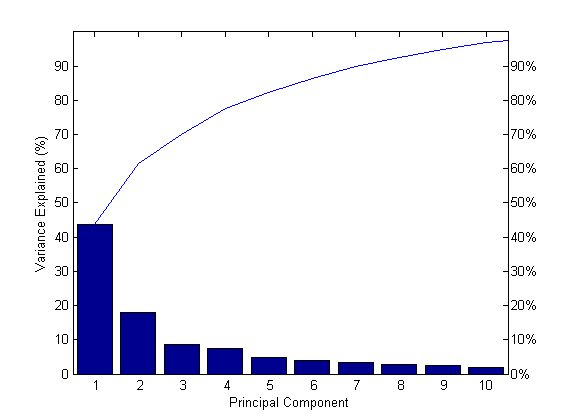
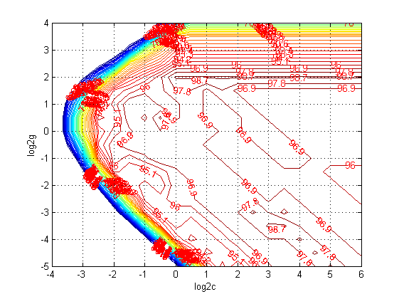

test_for_pcaForSVM
clear;
clc;
load wine;
train_wine = [wine(1:30,:);wine(60:95,:);wine(131:153,:)];
train_wine_labels = [wine_labels(1:30);wine_labels(60:95);wine_labels(131:153)];
test_wine = [wine(31:59,:);wine(96:130,:);wine(154:178,:)];
test_wine_labels = [wine_labels(31:59);wine_labels(96:130);wine_labels(154:178)];
[train_wine,pstrain] = mapminmax(train_wine');
pstrain.ymin = 0;
pstrain.ymax = 1;
[train_wine,pstrain] = mapminmax(train_wine,pstrain);
[test_wine,pstest] = mapminmax(test_wine');
pstest.ymin = 0;
pstest.ymax = 1;
[test_wine,pstest] = mapminmax(test_wine,pstest);
train_wine = train_wine';
test_wine = test_wine';
[train_pca,test_pca] = pcaForSVM(train_wine,test_wine,90);

[bestacc,bestc,bestg] = SVMcgForClass(train_wine_labels,train_pca,-4,6,-5,4,3,0.5,0.5,0.9)
cmd = ['-c ',num2str(bestc),' -g ',num2str(bestg)];
model = svmtrain(train_wine_labels, train_pca,cmd);
[ptrain_label, train_acc] = svmpredict(train_wine_labels, train_pca, model);
[ptest_label, test_acc] = svmpredict(test_wine_labels, test_pca, model);
bestacc =
98.8764
bestc =
0.7071
bestg =
1.4142
Accuracy = 98.8764% (88/89) (classification)
Accuracy = 97.7528% (87/89) (classification)
